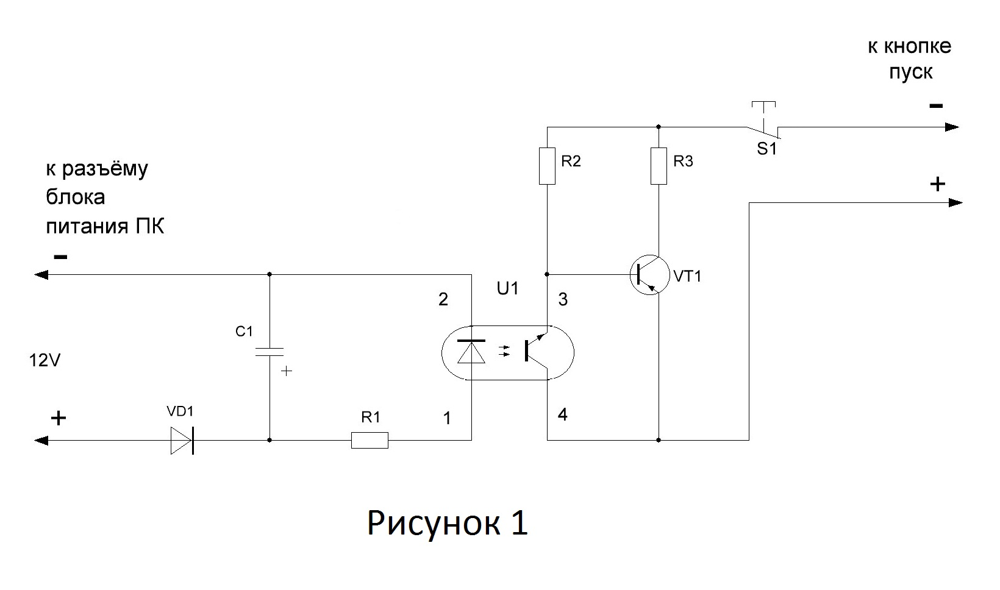
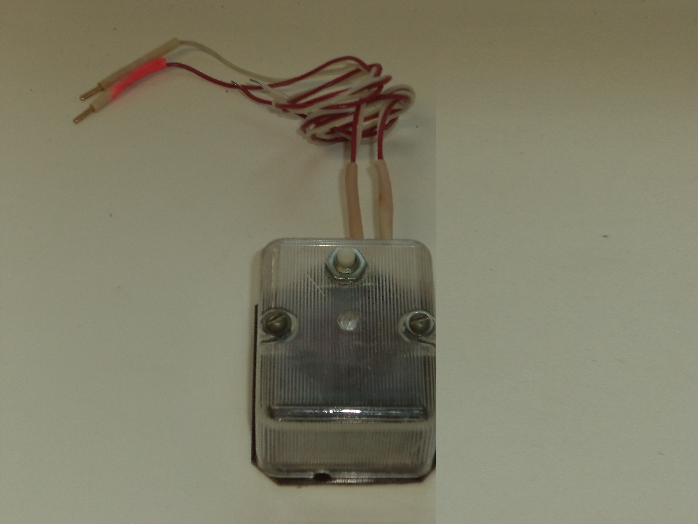

В результате периодически возникающих проблем с напряжением электропитания происходит отключение компьютера находящегося в труднодоступном, удаленном месте от обслуживающего персонала и нет возможности быстрого его включения, что бывает очень необходимо. Не всегда помогает устройство бесперебойного питания и внутренние программные средства авто-включения самого компьютера.
Предлагаемое устройство позволяет автоматически производить запуск компьютера без участия человека при появлении напряжения электропитания. В данном устройстве предусмотрена небольшая задержка по времени перед его срабатыванием для возможности первоначального включения компьютера собственными средствами, только после этого попытку включения производит данное устройство.
На рисунке 1 изображена схема устройства. Во время работы компьютера на вход устройства подано напряжение 12 вольт через диод VD1. Конденсатор С1 заряжен, через светодиод U1 и ограничительный резистор протекает ток, фототранзистор оптрона U1 открыт, в результате чего транзистор VT1 находиться в закрытом состоянии и цепь кнопки пуск разомкнута. Как только компьютер выключается конденсатор С1 начинает разряжаться через резистор R1 и светодиод оптрона U1 удерживая фототранзистор в открытом состоянии. После разряжения конденсатора С1 до уровня закрытия оптрона U1 ток протекающий от эмиттера через базу транзистора VT1 и резистор R2 открывает его тем самым производя включение компьютера. Диод VD1 не допускает разряжения конденсатора через другие узлы схемы компьютера. Задержка по времени включения регулируется подбором конденсатора С1.
Кнопка S1 предназначена для возможности проверки ручного включения от кнопки пуск на лицевой панели системного блока. В кнопке S1 задействована группа нормально замкнутых контактов. Для этого нужно нажать и удерживать кнопку S1 затем нажать пуск и отпустить обе кнопки.
В схеме использованы такие детали как оптрон U1-ET1103, транзистор VT1-КТ814В, диод VD1- Д223, конденсатор С1-К50-53 2200µF-63V, резисторы R1-2,2кОм, R2-100кОм, R3-120 Ом, кнопка S1-ПКн6-1.
Питание схемы осуществляется от свободного разъёма блока питания компьютера предназначенного для питания внутренних устройств напряжением 12 вольт либо напряжения 5 вольт, но время задержки включения уменьшиться примерно в два раза.
Автор: Александр Кузнецов